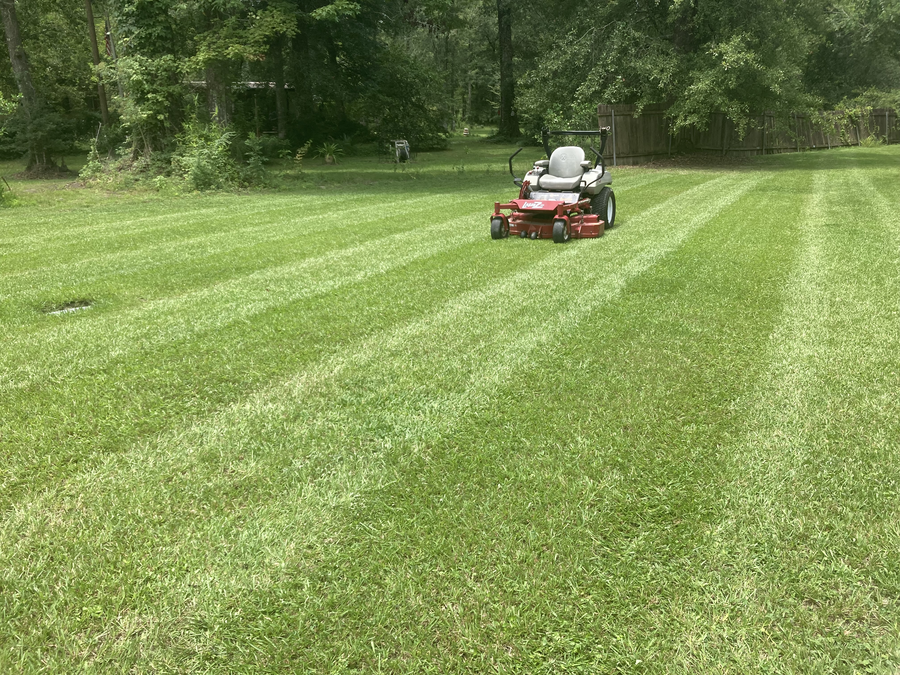

Education & Experience
Education
-
Denham Springs High School
Denham Springs, LA
Fall 2014 – Spring 2018
-

Bachelor of Science in Chemical Engineering
Louisiana State University (LSU) · Baton Rouge, LA
Fall 2018 – Fall 2022
-
Doctor of Philosophy in Chemical Engineering
Minor in Computer Science
Louisiana State University (LSU) · Baton Rouge, LA
Spring 2023 – Spring 2027 (expected)

Experience
-
Owner & Operator
Lawn Care and Landscaping Business
Spring 2018 – Summer 2025
I started with just a push mower and worked my way up to running a lawn care and landscaping business. It helped me pay my way through my senior year of high school, all of undergrad, and halfway through my PhD.
- Worked directly with customers and learned to manage the day-to-day finances of a small business.
- Planned routes, scheduled jobs, and maintained and repaired my equipment.
- Took responsibility for getting jobs done and making things right when plans changed.
- Most importantly, it taught me the value of hard work, pride in a job well done, attention to detail, and consistency.


-
Graduate Researcher
Louisiana State University · Baton Rouge, LA
Spring 2023 – Present
- I conduct my doctoral research under the guidance of Prof. José Romagnoli at LSU. My work focuses on using industrial time-series data to monitor processes, diagnose faults, and improve process control.
- ExxonMobil sponsors my research. Gregory Robertson, Mike Kurtz, and Estelle Gustafson from the Baton Rouge refinery team have mentored me and helped me understand how the problems I study show up in refinery operations.
- The collaboration brings LSU’s research expertise together with the refinery team’s operating experience. That perspective helps me ask better research questions and think through what it would take to use the methods in practice. See Research Interests for more on the problems I work on.